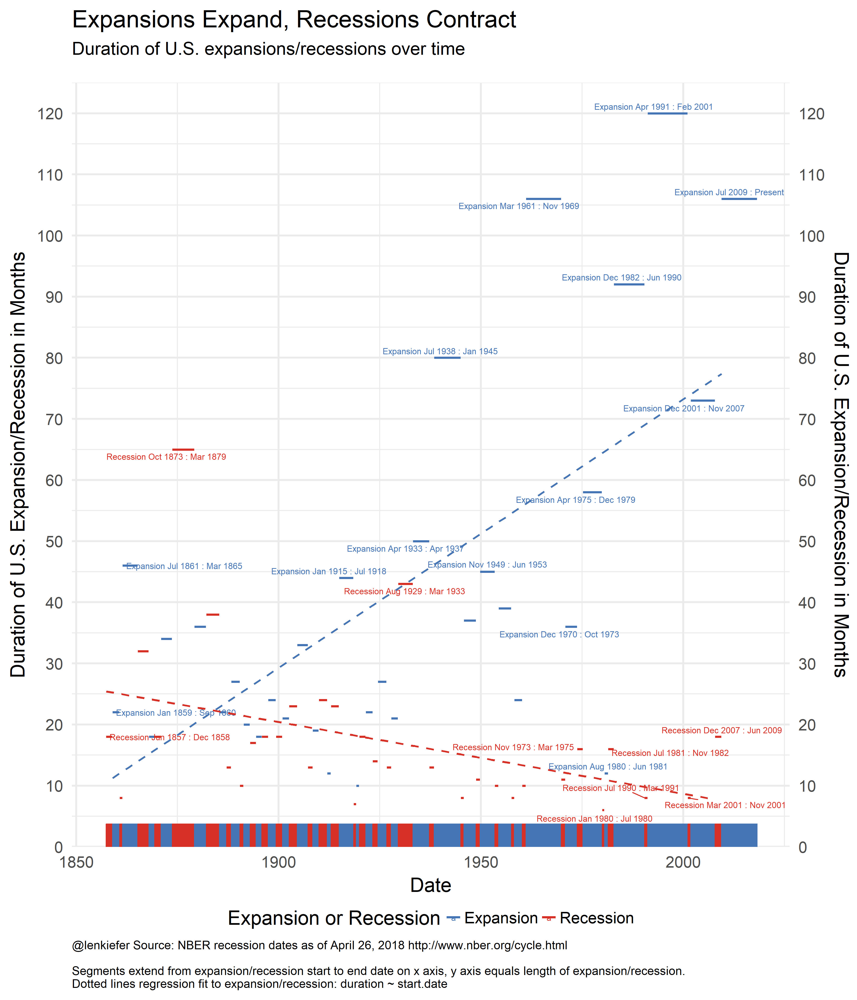

IN THIS POST I WANT TO SHARE A GRAPH looking at the length of economic expansions and recessions in the United State over time. Earlier today, Andrew Chamberlain (on Twitter), observed that at the end of this month the current economic expansion in the U.S. would be the second longest in history. Let’s explore.
In the United States, the National Bureau of Economic Research (NBER) dates expansions and recessions. See for example http://www.nber.org/cycles.html for a list of dates. The table is informative, but can we do something more graphical? Yes we can.
Here’s the graph I made. We’ll discuss and I’ll provide R code below.

Discuss
This chart plots the date for NBER expansions/recession on the x axis against the duration (in months) on the y axis. The higher and longer the segment the longer the expansion/recession lasted. I also fit a regression line through the points. What this shows is that while expansions (blue) have gotten longer over time, recessions (red) have gotten shorter over time.
R code
Per usual, let’s make a graph with R.
Recession dates
I often use recession shading on line plots, see here for handy R code. But I also like to try more experimental visualizations, like these.
Let’s first set up our data. The NBER page has an excel spreadsheet, but we can just do it manually.
First let’s set up our R session with the libraries we will need today.
#####################################################################################
## Load libraries ##
#####################################################################################
library(tidyquant)
library(sqldf)
library(ggrepel)
library(animation)And then create our data.
#####################################################################################
## Make Recession Data Frame ##
#####################################################################################
recessions.df = read.table(textConnection(
"Peak, Trough
1857-06-01, 1858-12-01
1860-10-01, 1861-06-01
1865-04-01, 1867-12-01
1869-06-01, 1870-12-01
1873-10-01, 1879-03-01
1882-03-01, 1885-05-01
1887-03-01, 1888-04-01
1890-07-01, 1891-05-01
1893-01-01, 1894-06-01
1895-12-01, 1897-06-01
1899-06-01, 1900-12-01
1902-09-01, 1904-08-01
1907-05-01, 1908-06-01
1910-01-01, 1912-01-01
1913-01-01, 1914-12-01
1918-08-01, 1919-03-01
1920-01-01, 1921-07-01
1923-05-01, 1924-07-01
1926-10-01, 1927-11-01
1929-08-01, 1933-03-01
1937-05-01, 1938-06-01
1945-02-01, 1945-10-01
1948-11-01, 1949-10-01
1953-07-01, 1954-05-01
1957-08-01, 1958-04-01
1960-04-01, 1961-02-01
1969-12-01, 1970-11-01
1973-11-01, 1975-03-01
1980-01-01, 1980-07-01
1981-07-01, 1982-11-01
1990-07-01, 1991-03-01
2001-03-01, 2001-11-01
2007-12-01, 2009-06-01
2018-04-02, 2100-01-01"), sep=',',
colClasses=c('Date', 'Date'), header=TRUE)This code creates a simple data frame recessions.df with two columns Peak and Trough corresponding to the NBER dates. A recession period is between the Peak and Trough, while the expansion is dates between the trough and peak. Because the current expansion (through April 2018) has not ended, I added a row to the bottom of the data frame for the next expansion. I’m not sure when the next recession will occur, forecasting is hard after all, but I’m pretty sure it will happen by 2100.
This table isn’t quite ready for visualization.
Recession dating goes back to the 1850s. Let’s create a monthly data frame with one row per month from January 1857 to April 2018.
df<- data.frame(date=seq.Date(as.Date("1857-01-01"),
as.Date("2018-04-01"), by="1 month"))Merging by date ranges
What we want to do is merge this date data frame df with our recessions data frame recessions.df based on date ranges. Then for each period we would like to know not only is it in an expansion or recession, but which expansion/recession. For example, April 2009 was in the recession that lasted from December 2007 to June 2009. This problem is small enough that you could do it by hand in a spreadsheet (no need to burn them all).
But let’s do it algorithmically. Merging on a date range (e.g. is the data in df between Peak and Trough in recessions.df) isn’t straightforward in R, but it’s pretty easy in SQL. Fortunately, thanks to this Stack Overflow question and answer, I learned about the sqldf package that lets you run SQL on R data frames. WIth SQL operations the kind of merge we want is quite easy.
If someone knows how to do this in R with either the tidyverse or data.table or base R, let me know.
rdf <- recessions.df %>%
mutate(TroughLag = lag(Trough), # find last trough
PeakLag = lag(Peak) # find last peak
)
# Merge with sqldf
output <- sqldf("select * from df left join rdf
on (df.date>=rdf.Peak and df.date <= rdf.Trough or
(df.date > rdf.TroughLag and df.date <= rdf.Peak)) ")Noew
outdf <- mutate(output,
expand=ifelse(date>=Peak, "Recession","Expansion"),
d1=as.Date(ifelse(expand=="Recession",Peak, TroughLag %m+% months(1))),
d2=as.Date(ifelse(expand=="Recession",Trough, Peak %m-% months(1)))) %>%
mutate(name=paste0(expand, " ",
as.character(d1, format="%b %Y"), " : ",
as.character(d2, format="%b %Y")
)) %>%
# relabel the last row to say :present
mutate(name=ifelse(name=="Expansion Jul 2009 : Mar 2018",
"Expansion Jul 2009 : Present", name)) %>%
mutate(contraction = interval(Peak, Trough) %/% months(1), # Peak to Trough
expansion = interval(TroughLag, Peak) %/% months(1), # Previous Trough to this Peak
cycle1 = interval(TroughLag, Trough) %/% months(1), # Trough from previous Trough
cycle2 = interval(PeakLag, Peak) %/% months(1)) # Peak from previous Peak## Note: method with signature 'Timespan#Timespan' chosen for function '%/%',
## target signature 'Interval#Period'.
## "Interval#ANY", "ANY#Period" would also be validknitr::kable(filter(outdf, date=="2009-06-01"))| date | Peak | Trough | TroughLag | PeakLag | expand | d1 | d2 | name | contraction | expansion | cycle1 | cycle2 |
|---|---|---|---|---|---|---|---|---|---|---|---|---|
| 2009-06-01 | 2007-12-01 | 2009-06-01 | 2001-11-01 | 2001-03-01 | Recession | 2007-12-01 | 2009-06-01 | Recession Dec 2007 : Jun 2009 | 18 | 73 | 91 | 81 |
Now we can summarize our data. The end results is a table that looks quite a lot like the one the NBER provides. Though this table has entries for both expansions and recessions. It’s less compact as a table (it doubles the rows you need), but better for plotting.
#create summary data
outdf2 <-
outdf %>% group_by(name, expand) %>%
summarize(start.date=min(date),
end.date=max(date),
contraction=mean(contraction),
expansion=mean(expansion),
cycle1=mean(cycle1),
cycle2=mean(cycle2)) %>%
ungroup() %>% arrange(start.date) %>%
mutate(duration =ifelse(expand=="Recession",contraction,expansion)) %>%
arrange(start.date) %>% filter(!is.na(expand) )
knitr::kable(outdf2 %>% tail())| name | expand | start.date | end.date | contraction | expansion | cycle1 | cycle2 | duration |
|---|---|---|---|---|---|---|---|---|
| Recession Jul 1990 : Mar 1991 | Recession | 1990-07-01 | 1991-03-01 | 8 | 92 | 100 | 108 | 8 |
| Expansion Apr 1991 : Feb 2001 | Expansion | 1991-04-01 | 2001-02-01 | 8 | 120 | 128 | 128 | 120 |
| Recession Mar 2001 : Nov 2001 | Recession | 2001-03-01 | 2001-11-01 | 8 | 120 | 128 | 128 | 8 |
| Expansion Dec 2001 : Nov 2007 | Expansion | 2001-12-01 | 2007-11-01 | 18 | 73 | 91 | 81 | 73 |
| Recession Dec 2007 : Jun 2009 | Recession | 2007-12-01 | 2009-06-01 | 18 | 73 | 91 | 81 | 18 |
| Expansion Jul 2009 : Present | Expansion | 2009-07-01 | 2018-04-01 | 980 | 106 | 1087 | 124 | 106 |
| Note that the |
With this data in hand we can make our plot:
#####################################################################################
## Make Plot ##
#####################################################################################
ggplot(data = outdf2 %>% filter(!is.na(expand)),
aes(x=start.date, xend=end.date,
y=duration, yend=duration, label=name,color=expand))+
scale_fill_manual(name="Expansion or Recession", values= c("#4575b4", "#d73027"))+
scale_color_manual(name="Expansion or Recession", values= c("#4575b4", "#d73027"))+
theme_minimal(base_size=20)+
theme(legend.position="bottom",
plot.caption=element_text(hjust=0,size=12) )+
geom_segment(size=1.1)+
scale_y_continuous(breaks=seq(0,120,10),limits=c(0,125),expand=c(0,0),sec.axis=dup_axis())+
# even with ggrepel, labeling all points gets crowded
geom_text_repel(data= outdf2 %>%
filter(duration>40 | (year(start.date)> 1969 | year(start.date) < 1860)
), size=3)+
stat_smooth(method="lm", fill=NA, linetype=2, alpha=0.35)+
labs(x="Date",y="Duration of U.S. Expansion/Recession in Months",
title="Expansions Expand, Recessions Contract",
subtitle="Duration of U.S. expansions/recessions over time\n",
caption="@lenkiefer Source: NBER recession dates as of April 26, 2018 http://www.nber.org/cycle.html\n\nSegments extend from expansion/recession start to end date on x axis, y axis equals length of expansion/recession.\nDotted lines regression fit to expansion/recession: duration ~ start.date")+
geom_rug(data=outdf,sides="b", inherit.aes=FALSE,aes(x=date,color=expand))
And of course, now that we have it, we’re so close to animating it. The code below makes an animated gif.
#####################################################################################
## Function for plotting ##
#####################################################################################
plotf<-function(dd=max(outdf$date)){
outdf.plot<-filter(outdf,date<=dd)
outdf2.plot<-filter(outdf2, start.date<=dd)
ggplot(data = outdf2.plot %>% filter(!is.na(expand)),
aes(x=start.date, xend=end.date,
y=duration, yend=duration, label=name,color=expand))+
scale_fill_manual(name="Expansion or Recession", values= c("#4575b4", "#d73027"))+
scale_color_manual(name="Expansion or Recession", values= c("#4575b4", "#d73027"))+
theme_minimal(base_size=20)+
theme(legend.position="bottom",
plot.caption=element_text(hjust=0,size=12)
)+
geom_segment(size=1.1)+
scale_y_continuous(breaks=seq(0,120,10),limits=c(0,125),expand=c(0,0),sec.axis=dup_axis())+
scale_x_date(limits=as.Date(c("1850-01-01","2019-01-01")))+
#geom_text_repel(data= outdf2.plot %>% filter(duration>40 | (year(start.date)> 1969 | year(start.date) < 1860)
#), size=3)+
stat_smooth(method="lm", fill=NA, linetype=2, alpha=0.35)+
labs(x="Date",y="Duration of U.S. Expansion/Recession in Months",
title="Expansions Expand, Recessions Contract",
subtitle="Duration of U.S. expansions/recessions over time\n",
caption="@lenkiefer Source: NBER recession dates as of April 26, 2018 http://www.nber.org/cycle.html\n\nSegments extend from expansion/recession start to end date on x axis, y axis equals length of expansion/recession.\nDotted lines regression fit to expansion/recession: duration ~ start.date")+
geom_rug(data=outdf.plot,sides="b", inherit.aes=FALSE,aes(x=date,color=expand))
}
# get dates
dlist<-sort(as.Date(rbind(outdf2$start.date,outdf2$end.date)))
oopt<-ani.options(interval=1/10)
saveGIF({for (ii in 2:(length(dlist)+20)){
i<-min(length(dlist),ii)
g<-plotf(dlist[i])
print(g)
print(paste(ii,"out of ",length(dlist)+20))
ani.pause()
}
}, movie.name = "YOURDIRECTORY/cycle.gif", ani.width=840, ani.height=1000)
# Be sure to set YOURDIRECTORY to a placeyou want to save this awesome gif (needs animation and ImageMagick to run)Running this give you: